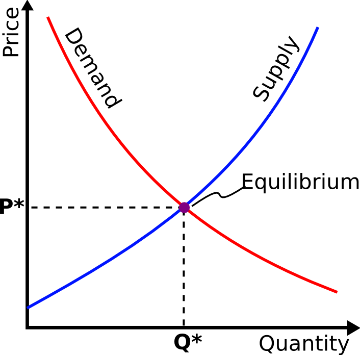

While there are many reasons to write software, it is still worth asking whether it will remove future motivations when the work becomes available for others to use and build upon.
The problem with this question is that it's a trick: a person is only motivated to write software when there is a need to improve what currently exists. If software doesn't work properly for someone, that is the best motivation to make it better. Paying a license fee in hopes that this money will be invested on future innovations is one motivation, but there can be others.
Windows and Office deliver half of Microsoft's revenues but are less than half of their engineering. Microsoft uses their dominance in those two markets to fund a number of other much less profitable ventures — much of the rest of the company. Even worse, because Windows and Office expertise and code are locked up, the entire industry must wait for Microsoft to improve its products on whatever shipping cycle they choose.
In a free software world, resources can flow where they are needed, in the quantity they are needed. Code to support a feature gets written if the feature is important. Free software enables a freer flow of resources than proprietary software, and therefore higher quality.
The job of a business is to make satisfied customers, and free software increases possibilities for service businesses, as I will discuss later. While law libraries and LexisNexis contain millions of freely available legal pleadings and decisions, no one has said this has decreased the motivation to become a lawyer! In fact, imagine trying to be a lawyer without access to these resources.
There are many answers to the question of motivation, but it is important to start by mentioning that analyzing motivations is a secondary level of analysis. To understand the free market of free software you have to start with the laws of supply and demand:1

Conventional models of economics do not apply to products with zero marginal cost. The model above assumes there can be supply shortages that would tend to increase prices.
Copying bits is a computational task whose marginal cost is the cost of the electricity, which is dropping according Moore's law because smaller transistors use less electricity. When you assume the cost to produce bits is zero, you can no longer have supply shortages. The law of demand dictates that as prices are lowered, demand will increase. Consequently, a product with zero cost should, in principle, have infinite demand. One answer to why people will write free software in the future is because there will be infinite demand for it. Wikipedia, Linux, FireFox, and many other free software products have user bases which are growing every year, and are even taking away marketshare from proprietary products, as predicted.2
The law of supply says that higher prices give producers an incentive to supply more in the hope of making greater revenue. The supply curve seems to suggest that if the price of a product is zero, producers will have no incentive to make anything. However, the supply curve never envisioned that the marginal cost of production would be zero. It is this difference which upends the conventional economic rules.
Something that has no marginal cost, and is acquired by consumers for no cost, should have infinite supply and infinite demand. If Wikipedia charged $50 for the privilege of browsing their encyclopedia, they would not have had the millions of contributors and tens of millions of enhancements they have received so far. Free software will take off because the most basic laws of economics say it should.
There are many opportunities for volunteers and public institutions to create free software, but commercial enterprises need software to run their business, and they are an enormous potential source of funding. For-profit service organizations will hire programmers to provide the support and improvements corporations demand of software. Programmers, like lawyers and accountants, can sit on their ass until someone needs software to be written or improved. We will get paid because computers are useless without us.
As with other sciences, there should be many avenues for corporations to make money via the use and production of freely-available advances in computer science. In fact, by some estimates, 75% of software is written for internal use inside a corporation, without any thought of selling it to others. This corporate software is “free” to its customers inside their corporation. Software companies making licensing revenue is already a very small part of the software industry today.
Free software is much more conducive to creating robust software services business because all of the relevant information is publicly available. In the world of proprietary software, the company that wrote the software is typically the only one capable of providing support. Microsoft has created a huge software ecosystem, but the free software service ecosystem has the potential to be much larger. Of course, there is no guarantee of quality of service providers, but this same issue exists today with car mechanics.
Today, many free software projects have thriving service and support communities around them. While others are not particularly healthy yet, this is a function of the small overall marketshare of free software, not any fundamental flaw in the business model.
In fact, the proprietary model creates fundamental limitations in the service business. When I left Microsoft, I took on a consulting job helping a team build a website which used Microsoft Passport as the authentication mechanism. However, as I ran into problems, even Google wasn't able to help because the knowledge I needed to fix my problems was locked up behind the Microsoft firewalls. Even though I was an expert in many Microsoft technologies, I was stymied and needed to use my old contacts to get the code working. If I hadn't been a former employee, I would not have been able to solve my problem. Fixing a problem in proprietary software can sometimes feel like performing witchcraft — you have to try lots of random incantations because you can't know what is really going on.
I spoke with an IT employee in a hospital who told me that after her hospital purchased some software, their vendor became unresponsive. After making their money on the sale, they had no motivation to help the hospital anymore. The hospital fought with their software supplier about whether the enhancements they were requesting were bugs, which would be fixed quickly and for free, or features, which would cost money and weren't guaranteed to be made for a year or more. To the hospital, this distinction was irrelevant: lives were on the line, and they needed improvements, and they didn't care how their vendor categorized them!
In a services business, the vendor gets paid to make the customer happy, not before the product is in use. Restructuring the software industry into a services business based on free software will increase customer satisfaction and strengthen the relationship between vendor and customer.
There is an enormous market in software for running a business. One of the biggest markets is known as Enterprise Resource Planning (ERP), an umbrella term for software used to manage the back office of an enterprise. ERP covers everything from payroll to customers to inventory:
| Category | Features |
|---|---|
| Manufacturing | Engineering, Bills of Material, Scheduling, Capacity, Workflow Management, Quality Control, Cost Management, Manufacturing Process, Manufacturing Projects, Manufacturing Flow |
| Supply Chain Management | Inventory, Order Entry, Purchasing, Product Configuration, Supply Chain Planning, Supplier Scheduling, Inspection of goods, Claim Processing, Commission Calculation |
| Financials | General Ledger, Cash Management, Accounts Payable, Accounts Receivable, Fixed Assets |
| Projects | Costing, Billing, Time and Expense, Activity Management |
| Human Resources | Human Resources, Payroll, Training, Time & Attendance, Benefits |
| Customer Relationship Management | Sales and Marketing, Commissions, Service, Customer Contact and Call Center support |
| Data Services | various Self-Service interfaces for Customers, Suppliers, and Employees |
The major modules of Enterprise Resource Planning (ERP).
ERP is a multi-billion dollar industry, and today it is dominated by proprietary software. This is ironic because ERP solutions, unlike a word processor, are specifically customized to a particular business. The need for customization suggests that ERP software could be free, but with a robust service business behind it: customizing it, helping import and manage the data, providing training and technical support, etc. Enhancements made by various service providers could be fed back into the core product, and service providers could themselves be trained and certified, thus providing revenue for the core development.
One of the perceived weaknesses of free software is that there is no single owner of the work, and therefore no one has skin in the game, or a throat to choke when something goes wrong. This thinking is faulty because it assumes the computing environment is simple and homogeneous and makes about as much sense as having one doctor for your dermatology and proctology needs. Computing systems today are not only large and complicated, they are also heterogeneous. In the 1970s, companies like IBM provided all the hardware, software, and services necessary to run a business, but today's computing environments are very different. Even in a homogeneous Microsoft shop where all of the servers are running Windows, SQL Server, and .Net, you still might use HP hardware and administration tools, Intel chips and drivers, an EMC disk farm, etc.
Computer software is not smart yet, but don't let that fool you into thinking that it is not large and complicated. A trained engineer can become an expert at 100,000 lines of code, but because a modern computer contains 100 million lines of code, you need at least 1,000 different people to help with all possible software problems. In other words, it is a fact of life in a modern IT department that, whether using free or proprietary software, support will require relationships with multiple organizations.
In fact, free software can allow service and support teams to better help you because they can build expertise in more than one area because all of the code and other relevant information is out there. Service companies can even build a hierarchy of relationships. You might call HP to get help with your server, and HP might have an escalation relationship with MySQL if they track it down to a database problem they can't fix. These hierarchies can provide one throat to choke.
All hardware companies have a compelling reason to use and support free software: it lowers their costs. IBM and Cray are happy to give you a Linux OS for free, so you can put your money toward the supercomputer they are selling. The Playstation 3 runs Linux, with Sony's blessing, because it is another reason to buy their hardware and take their product to new places they have yet to exploit.
Free software lowers the cost of hardware, and its greater usage will stimulate new demand for computers and embedded devices. If a complete, free software stack were magically available today that enabled computer vision and speech, our toys would have them tomorrow. A world of rich free software is a world with amazing hardware.
Free software levels the playing field and makes the hardware market richer and more competitive. One of the reasons an MRI machine is expensive is because the software is proprietary. When a hardware vendor controls the software, it can set the price at the cost of the hardware plus the cost to develop the software, rather than something approximating their hardware costs. If MRI software were free, the hardware cost would drop, more people could afford an MRI, and the quality would increase faster.
In fact, there already is free, high-quality scientific software suitable for building an MRI machine (in products like SciPy), but the current manufacturers build their products using proprietary software. They aren't colluding with each other, but it reminds me of the old days of databases where your only choice was whether to pay many thousands for Oracle or DB2. The healthcare hardware companies had better watch their backs!
Even proprietary software companies have an incentive to use free software, to lower their costs. It is ironic that Microsoft could make higher profits, and build better products, by using free software.
Students in every field use software in their studies; this is free brainpower! In the computer world, there are two levels of programming: the boring work that engineers do, and the “fancy” coding that researchers do.
Given that software PhD-types follow the lead of other fields and release their ideas publicly in papers, and want people to use their ideas, you'd think making their code freely available would be a part of the computer science research culture today, but it isn't, even in universities. There is a paper for Standford's Stanley, but no code. Releasing software with the paper is the exception rather than the rule today.
Even though all the key ideas are available in a paper, re-using the ideas in such a document takes a lot more time than working with the software directly. You can reuse software without fully understanding it, but you can't re-implement software without fully understanding it!
At Microsoft, both a researcher's time and his code could get allocated to a product group if anyone found their work interesting. Researchers at Microsoft wanted to ship their code and many PhDs joined Microsoft because they knew their work had the potential to become widely used.3
In the future, when we get a complete set of GPL codebases, it will get interesting very fast because researchers will realize that the most popular free codebase is also the best one for their research.
Firefox made $52 million in 2005 by sharing ad revenue with Google. Firefox made this money when their browser was configured to use the Google search service. Free programs can receive a cut of the business they create for a service provider. Your free photo management tool could charge for the right to be the default printing service of their application. Widespread use of free software will create new opportunities to extract value.
The self-satisfaction and adulation that people receive from producing things that others use and enjoy should not be misunderestimated, even in the world of software. It was a common feeling among my peers at Microsoft that we should pinch ourselves because we were getting paid to write code that millions of people used. It is almost as much fun to be appreciated in the software world as it is in other endeavors. I once played music for 200 people and I didn't even care that I wasn't getting paid when a girl who liked my music put my business card in her bra.
“Goom is the only software project I know admired by myself, the wife, my three-year-old son, and the mother-in-law.” — Dave Prince
The Linux kernel and the rest of the free software stack have spots of brilliance in many places, but not many you can visualize. My epiphany that Linux was going to win on the desktop happened when I cranked up the default Linux media player. Totem doesn't contain a web browser or try to sell you anything, and it plays a very wide variety of formats, but what impressed me was its elegant visualization engine, not-so-elegantly named Goom.
Goom is visual proof of the proposition that with the free flow of ideas, a clever engineer from Toulouse who you've never heard of, was never hired by anyone, never signed a non-disclosure agreement was able to write some beautiful code that now graces millions of computers. For all we know, he did this work in his pajamas — like the bloggers who took out Dan Rather in the Rathergate4 scandal. If you want to read the code to learn its secrets, post a question in a support forum, or send a donation to say thanks, the software repository SourceForge enables this, and Goom is one of its 100,000 projects.
No one edits Wikipedia for fame or swooning girls. But this energy spent is an example of the surplus intelligence of millions of people that can be harnessed and put to work for interesting things. The surplus intelligence of computer scientists is enough to write all of the software we need. Programmers employed by businesses are just icing on the cake, or to answer the phone at 3AM when a computer is sick.
Content is king. In the digital world, content is encoded in digital format. If that format is open, and manipulated by free software, then the format can spread to every device and potential supporter of the arts. Every free software tool that manipulates a format can become a content platform. We think of music and movies as content platforms, but they are just the final outputs of two pieces of software. Musicians could start selling the data files they use to make their songs. This would allow people to enjoy the music of their favorite musicians, and re-mix it in new ways.
I would like to see a huge selection of document templates for OpenOffice, the free competitor to MS Office. Template creators could charge for them. A software license agreement says nothing about the content produced with it. Free software doesn't concern itself at all with the cost of things built with the software. We might develop a world with lots of totally free content, but that is a completely different set of choices we would make.
If we have to choose between free software and free content, free software is a much better choice because it will allow us to understand each other's content, which is the first step towards collaboration. A world full of free software is a world full of many different forms of content.